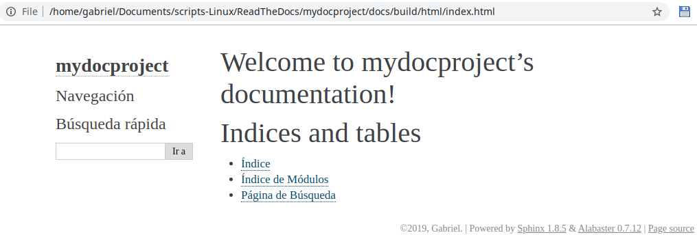

Generando documentación con Sphinx¶
Sphinx será la herramienta usada para la creación de documentación. Otra alternativa compatible con Read The Docs es MkDocs.
- Dentro del repositorio clonado, crear un directorio llamado
docsdonde se encontrará toda nuestra documentación y movernos a ese directorio:
mkdir docs
cd docs
- Inicializar el directorio
docscomo directorio de documentación de Sphinx:
sphinx-quickstart
Nota
Equivalentemente al anterior y a este paso podemos usar un solo comando los comprende: sphinx-quickstart docs
Aparecerá un wizard con mútiples opciones de Sphinx:
Welcome to the Sphinx 1.8.5 quickstart utility.
Please enter values for the following settings (just press Enter to
accept a default value, if one is given in brackets).
Selected root path: .
You have two options for placing the build directory for Sphinx output.
Either, you use a directory "_build" within the root path, or you separate
"source" and "build" directories within the root path.
> Separate source and build directories (y/n) [n]: y
Inside the root directory, two more directories will be created; "_templates"
for custom HTML templates and "_static" for custom stylesheets and other static
files. You can enter another prefix (such as ".") to replace the underscore.
> Name prefix for templates and static dir [_]:
The project name will occur in several places in the built documentation.
> Project name: mydocproject
> Author name(s): Gabriel
> Project release []:
If the documents are to be written in a language other than English,
you can select a language here by its language code. Sphinx will then
translate text that it generates into that language.
For a list of supported codes, see
http://sphinx-doc.org/config.html#confval-language.
> Project language [en]: es
The file name suffix for source files. Commonly, this is either ".txt"
or ".rst". Only files with this suffix are considered documents.
> Source file suffix [.rst]:
One document is special in that it is considered the top node of the
"contents tree", that is, it is the root of the hierarchical structure
of the documents. Normally, this is "index", but if your "index"
document is a custom template, you can also set this to another filename.
> Name of your master document (without suffix) [index]:
Indicate which of the following Sphinx extensions should be enabled:
> autodoc: automatically insert docstrings from modules (y/n) [n]:
> doctest: automatically test code snippets in doctest blocks (y/n) [n]:
> intersphinx: link between Sphinx documentation of different projects (y/n) [n]:
> todo: write "todo" entries that can be shown or hidden on build (y/n) [n]:
> coverage: checks for documentation coverage (y/n) [n]:
> imgmath: include math, rendered as PNG or SVG images (y/n) [n]:
> mathjax: include math, rendered in the browser by MathJax (y/n) [n]:
> ifconfig: conditional inclusion of content based on config values (y/n) [n]:
> viewcode: include links to the source code of documented Python objects (y/n) [n]:
> githubpages: create .nojekyll file to publish the document on GitHub pages (y/n) [n]:
A Makefile and a Windows command file can be generated for you so that you
only have to run e.g. `make html` instead of invoking sphinx-build
directly.
> Create Makefile? (y/n) [y]:
> Create Windows command file? (y/n) [y]:
Creating file ./source/conf.py.
Creating file ./source/index.rst.
Creating file ./Makefile.
Creating file ./make.bat.
Finished: An initial directory structure has been created.
You should now populate your master file ./source/index.rst and create other documentation
source files. Use the Makefile to build the docs, like so:
make builder
where "builder" is one of the supported builders, e.g. html, latex or linkcheck.
Importante
Se generará un archivo docs/source/conf.py con la configuración aplicada en el wizard.
- Desde el directorio
docs/crearemos los archivos html:
make html
Running Sphinx v1.8.5
loading translations [es]... done
making output directory...
building [mo]: targets for 0 po files that are out of date
building [html]: targets for 1 source files that are out of date
updating environment: 1 added, 0 changed, 0 removed
reading sources... [100%] index
looking for now-outdated files... none found
pickling environment... done
checking consistency... done
preparing documents... done
writing output... [100%] index
generating indices... genindex
writing additional pages... search
copying static files... done
copying extra files... done
dumping search index in Spanish (code: es) ... done
dumping object inventory... done
build succeeded.
The HTML pages are in build/html.
- Abrir el archivo
docs/build/index.htmlpara comprobar que se haya generado la documentación correctamente:
firefox build/html/index.html

Página index.html inicial con el tema Alabaster
Importante
- Todos los archivos
.rstgenerados bajo el directoriodocs/sourcetendrán su correspondiente archivo.htmlbajo el directoriodocs/build. - Los archivos
.rstserán llamados desde el archivoindex.rstusando elementostoctree, indicando la ruta y el nombre del archivo.